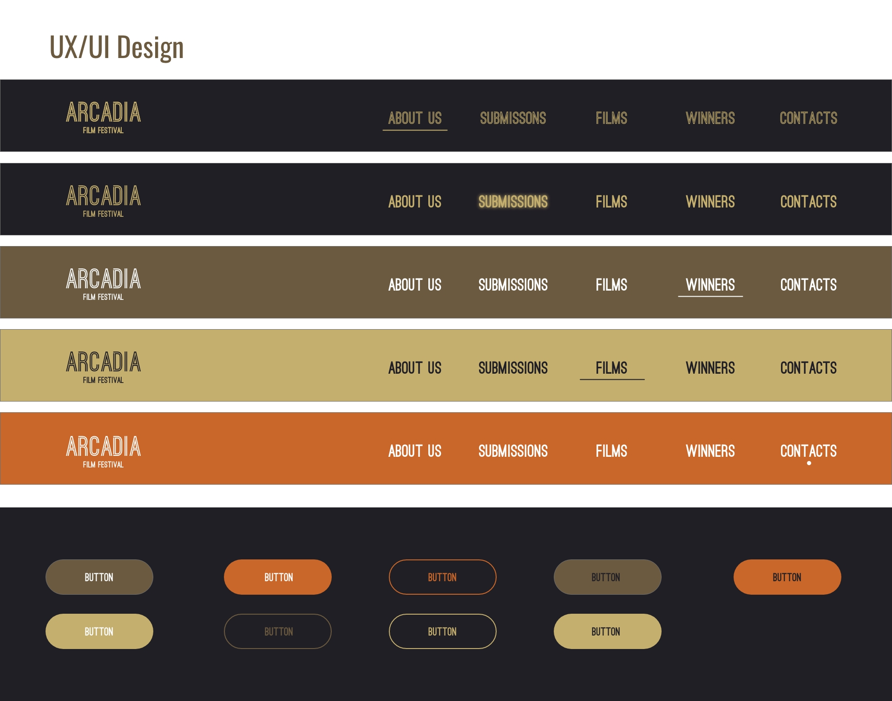

For this project, we will be creating a website for the Arcadian Film Festival to celebrate a fusion of classical civilizations and contemporary cinema. This will serve as a hub for filmmakers, enthusiasts, and industry professionals to engage, share and explore multiple genres through the lens of film.
The client’s primary goal is to have a website that filmmakers can use to submit/promote their films while also allowing film enthusiasts and industry professionals a way to experience these films.
The scope of this project consists of the creation of a user-friendly website interface that is responsive across all devices, the creation of an extensive archive section featuring past festival events, film screenings, discussions and award winners and finally interactive features for film submission (along with information for film submission), award voting and community engagement to boost user participation and provide a unique and lasting user experience.
As a passionate film enthusiast with an interest in Ancient Greek and Rome culture, I am looking forward to immersing myself in a vibrant community dedicated to celebrating the diverse art of film that Arcadia has to offer and with this not only enhance my passion for film but also get the chance to network with like-minded individuals consisting of filmmakers, film enthusiasts and industry professionals.
To start off the Toronto Film Festival has good SEO, running the website through SEO audits yields results of B. The website has excellent On-Page SEO allowing search engines to almost always make sure it’s the first website up when you type in keywords such as “film”, “film festival”, “Canada film festival”, “toronto film” and even “toronto festival”.
The links are all functional with next to no dead links, the only way to improve them is to make them more human and Search Engine readable.
However, a big issue is the total page file size. The page is very media heavy with videos playing in the background while also being filled with images which ends up meaning it runs a bit slower on dated machines and slower internet connections. Due to this when resizing the window the website takes a bit to resize the website content.
The only glaring issue is the lack of an obvious call to action for Film Submission, this may be due to the fact that the festival is over and they are preparing for their 2024 festival; however, some information for future submissions and an easy way to access it would be very useful. To get to submissions I had to google tiff submissions due to the fact I couldn’t find it on the homepage so this is definitely something that needs to be improved.
Overall, the website is great with a consistent theme and no inconsistencies with heading tags or typography. Everything has a good hierarchy and it is completely responsive so it works on all devices.
We’ll be focusing on the films section of the website. The films section provides an interactive search filter that allows users to search for a title of a film, details about a film, or credits about a film. Users are able to click the buttons within the filter and the films will filter to its results.
Of course, this isn’t the best filter system they’ve created. The filters provided are a mix of genres, film makers, and the type of film it is (e.g. short film, animation, episodic, etc). It makes it difficult to glance at the filter and pick out which one sounds the most interesting to us. The colors also clash with each other and make everything more overwhelming.
The way the films are organized on that page is very pleasant. With a portrait image as the movie poster for each film, it makes it more engaging to the page and provides the more authentic feeling of movies and films. However, the movie text on top of the image creates a distraction that takes away attention from the movie poster.
Engaging and informative content for all pages, including festival information, submission guidelines, and sponsor acknowledgement
High-quality images for website branding, festival posters, and previous winning films
Trailers or excerpts from previous winning films for showcase purposes
Research and Content Gathering
Design Phase
Development
Testing and Quality Assurance
Client Approval and Revisions
Deployment
Accessible for tablet & mobile users
Strategic & Creative direction
Main Navigation (Links with labels, express site's visual identity)
Page content will consist of a diverse selection of short films which are sourced through our received submissions from filmmakers and any collaborations with other film festivals.
We will also have comprehensive listings for film screenings, discussions, workshops and other related events which we will update regularly to ensure accuracy and relevance.
The creation of engaging content such as articles, interviews, reviews and behind-the-scene features will be sourced through collaboration with film critics, historians, and industry professionals willing to provide educated and insightful perspectives
Content such as reviews, comments and discussions will also be user-generated to foster community engagement and participation.
Finally we will also make sure to integrate social media platforms to share festival updates, highlight featured films and to engage with our audience across several social media platforms. This will also help maximize the reach and visibility.
Research will be conducted to find relevant terms and phrases which can be used as keywords throughout the website for the most optimisation.
Website content will be optimized by including target keywords not only within the keywords but also in the meta tags, headings and image alt attributes - this will help boost On-Page SEO.
There will be a focus on creating relevant content so ensuring that the content is well-written and engaging for our target audience.
Making sure the website is fully responsive across all platforms by using responsive design. By making the website mobile-friendly we can improve user experience and search rankings.
Finally, implementing local SEO by including location-specific keywords such as Arcadia, Greece and Rome.
Using Google Analytics to look at our website analytics and also using tools such as Google My Business for local listings and reviews.
For quality assurance testing we will use tools such as:
This is to ensure that the website is up to date with Accessibility requirements and SEO optimization.
For testing we can conduct tests of all the website's functionalities to ensure that navigation, film listings, event listings, ticket purchasing and submission forms are all up to date and there are no broken links present.
We will also test responsiveness across various devices and browsers to ensure compatibility and consistency.
Gather feedback from a group of users through usability testing sessions or surveys. Using the feedback we can then identify pain points, usability issues and areas for improvement.
Reviewing all the website content to make sure it’s relevant, accurate and consistent. Ensuring the content is well-written, free of grammatical errors and is aligned with the Arcadian theme and our website objectives.
Measure website loading times and other performance metrics using Google PageSpeed Insights.
Conducting security audits and vulnerability scans to identify potential security threats. Implementing things such as SSL encryption and other security methods to protect against SQL injections and cross-site scripting.
Ensuring regular software, plugin and framework updates to patch security vulnerabilities that may arise.
Finally using WAVE we can make sure that the website has excellent accessibility.
After the successful creation of the Short Film Festival website, our commitment extends beyond its launch to ensure ongoing support and maintenance. With a focus on reliability and efficiency, our team will utilize GitHub domain hosting, aligning with our preferred platform for website deployment. This choice ensures seamless integration and facilitates swift updates whenever necessary. Ideally the website will update biannually for before and after the festival.
Hosting on github will restrict in-depth levels of customization. Other than further customization, github hosting seems safe, low-cost, maintainable, and relatively easy-to-use. In the event of github going down, we run the risk of our own website going down as well. If this becomes a problem we can migrate to a different hosting service.
Maintenance and updates will happen at least biannual based on the festival and seasons. Metrics and performance evaluation will be obtained using Google Analytics to collect data and review. Digital marketing will be managed using social media communications.
In order of importance:
So: engage as much of a knowledgeable audience as possible (we need to build our reputation as a high calibre festival for these short film genres), and that audience volume & quality will in turn make the festival attractive to film creators (and help us recruit their submissions)
Definitely info to credit/acknowledge the creators/crew as that is an important incentive for receiving submissions. Anything else that would make the audience click though to watch the film would be great.
This is our inaugural festival website
[instructor note: taylor the audience that will realistically be drawn to your chosen genres]
Languages other than English are not needed (unless there is a good case for it based on some genres or for recruiting global audiences?)
Local films, but perhaps we could create a special category for outside the region? Up to you designers.
The films themselves will have to be hosted on a 3rd party website: youtube and/or vimeo will work. Our website will catalogue them and provide a way to view these (via a link or embedded video – up to you)
We’re on board with any style that works with our audience’s taste [instructor note: genre-specific?]
Not that we can think of.
Both (as per our client statement)
Brand new please.
No, and you can decide what’s best
Nothing comes to mind at the moment. Maybe not have it look too much like other festival’s website, so that the identity doesn’t get confused through similar branding?